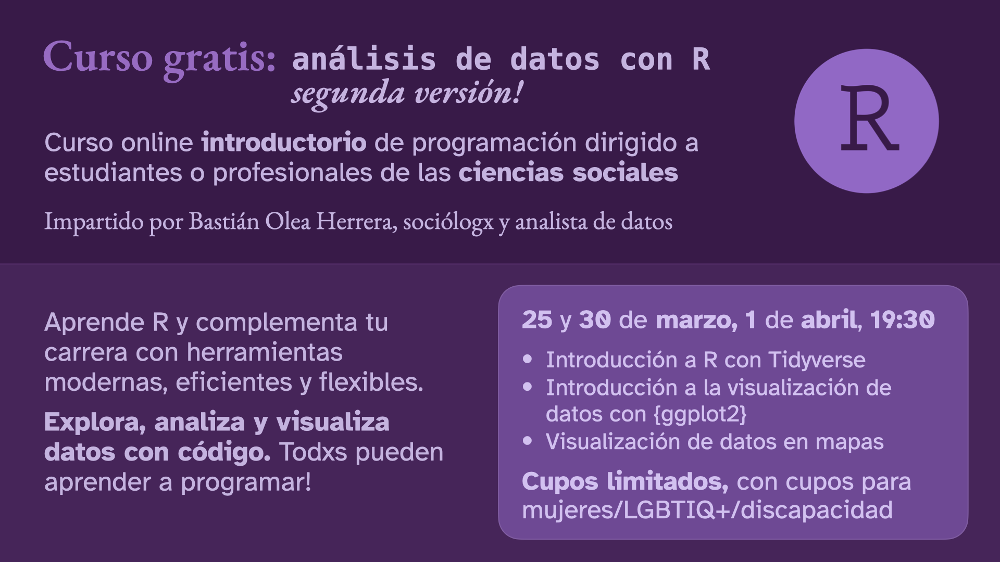
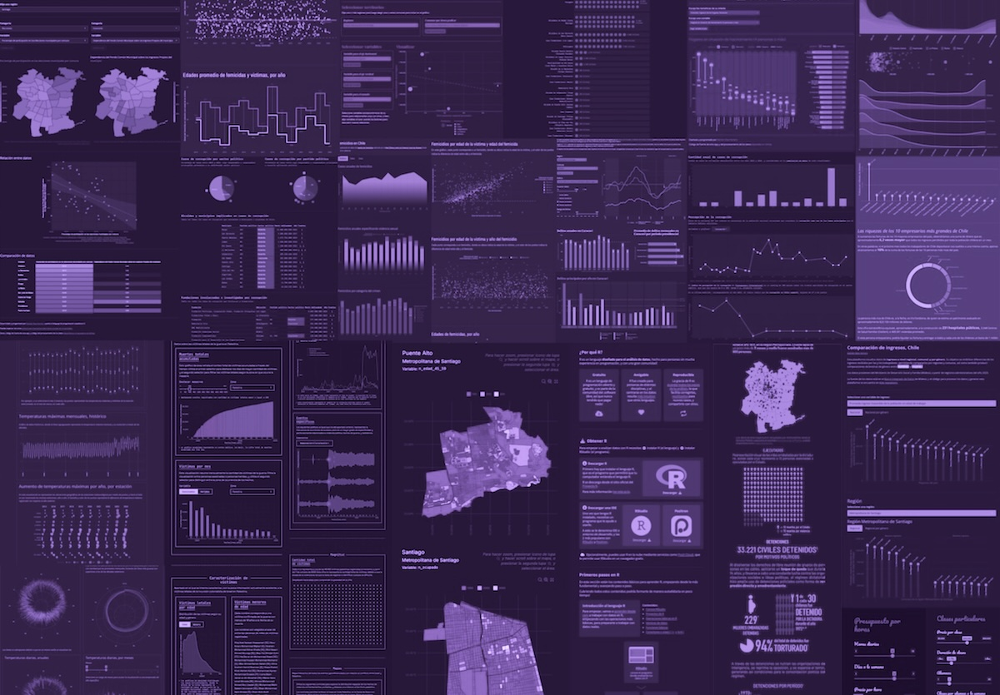

Curso gratuito: introducción al análisis de datos con R, 2ª versión
Curso online introductorio de programación dirigido a estudiantes o profesionales de las ciencias sociales
25/3/2026
Resumen
Segundo curso gratuito de introducción a R enfocados en ciencias sociales. En este curso, de tres sesiones, aprenderemos a usar R para analizar datos sociales, aprenderemos lo básico de la visualización de datos, y exploraremos la realización de mapas con R.
Fecha
March 25 – April 1, 2026
Hora
7:30 PM
Ubicación
Online

Sobre el curso
Segundo curso gratuito de introducción al análisis de datos con R, enfocado en las ciencias sociales.
En este curso de tres sesiones aprenderemos a usar R para analizar datos sociales, revisando lo básico de la visualización de datos, y explorando aspectos básicos de la creación de mapas con R.
El curso se dirige a personas de las ciencias sociales con mínima experiencia en análisis de datos y/o en R, ya que no es tan introductorio como el primer curso (va a empezar directamente con el trabajo con datos, saltando los aspectos básicos). Sin embargo, el curso es apto para personas sin experiencia previa, aunque se recomienda revisar los contenidos del primer curso!
R es un lenguaje diseñado para trabajar con datos. Además de exploración, transformación y análisis de datos, R permite hacer visualizaciones, animaciones, automatización de procesos, reportes, aplicaciones web, y mucho más.
Su gracia es que es un lenguaje usado por personas de diversas disciplinas, y por lo mismo es un lenguaje orientado a ser usado por personas que no sean expertas en informática o ciencias de la computación.
Aprende desde cero a usar este lenguaje y complementa tu carrera con herramientas de programación que te abrirán muchas posibilidades.

El curso va dirigido a profesionales o estudiantes de las ciencias sociales con mínima experiencia programando y/o usando R, o alguna experiencia trabajando con datos.
Cupos
Los cupos son limitados, y se aplicarán criterios de inclusión para la participación de grupos minoritarios (mujeres, disidencias de sexo y género, personas con discapacidad).
De todas maneras, cualquier persona podrá ver el streaming en vivo de las clases, que se transmitirá por Youtube.
Clases
Las clases serán online los días 25 y 30 de marzo, y 1 de abril a las 7:30PM (horario de Chile). Se enviará un enlace de Zoom a las personas que obtengan un cupo, y paralelamente cualquier persona podrá ver el streaming en vivo de las clases.
Docente
Bastián Olea Herrera posee un magíster en Sociología de la Universidad Católica de Chile, y se ha dedicado por más de 5 años al análisis de datos con R.
Su experiencia consiste principalmente en visualización de datos y desarrollo de aplicaciones interactivas con R. También se dedica a escribir tutoriales para ayudar a otr@s a aprender R.
Inscripciones
¡Las inscripciones se encuentran cerradas! Se enviaron correos a 150 personas con cupos para participar en el curso. Pero cualquier persona podrá ver el curso en vivo y acceder a los materiales.
Diapositivas
En las diapositivas del curso se resumen los temas, se muestran ejemplos de código, y se entregan enlaces a los datos necesarios y a los tutoriales para profundizar.
Streaming y grabaciones
Puedes ver las clases en vivo y en tiempo real por Youtube:
Grabación clase 1: introducción a R
Clase realizada el miércoles 25 de marzo.
Grabación clase 2: introducción a {dplyr}
Clase realizada el lunes 30 de marzo a las 19:30 horas (horario de Chile)
Grabación clase 3: resúmenes de datos, cruzar tablas, y {tidyr}
Clase realizada el miércoles 1 de abril a las 19:30 horas (horario de Chile)
Streaming clase 4: visualización de datos con `{ggplot2}``
Esta clase extra se realizará el martes 7 de abril a las 19:30 horas (horario de Chile)
Código
En este enlace puedes acceder al repositorio de GitHub que contiene el código que veremos en el curso, los datos que trabajemos, y también el código de R que genera las diapositivas con Quarto Revealjs.
Scripts de cada clase
Scripts vistos en clase, con comentarios explicativos de cada paso y comando. Se sugiere revisar a la par de las diapositivas, que también contienen enlaces a tutoriales más detallados de cada tema.
- Fecha de publicación:
- March 25, 2026
- Extensión:
- 4 minute read, 700 words
- Ver también: